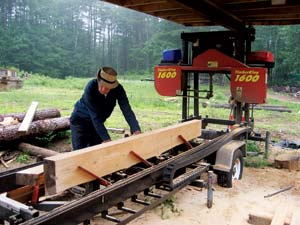

There is always a need for lumber around almost any homestead, and a custom sawmill service may be just what you need to convert trees into exactly the lumber you want. Whether salvaging storm-damaged trees or harvesting trees as part of a sustainable woodlot management program, converting local logs into lumber makes good sense. Even if you don’t have your own logs, buying locally cut lumber often will save you money. And if you choose a service that uses a portable mill, they will cut the logs into boards right on your property.
Very few large commercial sawmills do custom cutting. Most work purely on volume - and it just isn’t practical to keep track of the odd log to cut to a customer’s specifications. Custom sawyers, on the other hand, tend to be more flexible and can provide a number of options for various cutting needs. Many run stationary mills that require you to transport the logs to them. This works fine if you or someone you know has the equipment to do so. Otherwise, the best option is to hire a custom sawyer with a portable mill that can be set up at your location.
Finding a Sawyer. Once you have determined that you have logs you want milled, the next step is to find a sawyer. Many of the good ones keep busy by word of mouth, so it may take a little investigation. One way to find a sawyer is to do a Web search for manufacturers of band saw mills. They may be able to recommend someone in your area that uses one of their mills. Another good source is the county extension office. Sawyers generally charge for their services in one of two ways: by the board foot or by the hour.
Preparations. Ideally, logs should be at least 10 inches in diameter at the small end, and 8 feet long, so the mill’s clamping system can hold them.
If you are having a portable sawmill brought to your location, there are several things you can do to make the operation go smoothly. First, have the logs neatly stacked in a level area with room to work around them. The location should have good access. If possible, arrange the stack to cut the best logs first. As you cut through the pile, you may find a point at which the logs are too small, crooked or hollow to be worth the expense of the job.
Another issue is deciding what you want to do with the lumber. Sometimes customers just want it sawn up, with no plan for what they will do with it; others have a specific cut list for planned projects.
Caring for Your Woodpile. One of the most common mistakes people make is having lumber cut without providing a proper drying environment. Provide a level place to store the wood while it dries. The ideal drying scheme is to air dry the boards with 1-inch spacers between them.
The relationship between wood and moisture is complex. Drying time varies with species, thickness and weather. Air-dried wood typically has a moisture content of about 15 percent. The problem is, even this wood is not yet ready to be turned into furniture or flooring. If it is not dried down to 6 percent to 8 percent moisture content, it will shrink and then joints will pull apart, especially in the winter when the humidity in the house is typically lowest. To get the lumber’s moisture content this low, you can use a lumber kiln. (For more information, search lumber kiln.) For small projects, simply take the partially dried wood you want to use into the house and let it finish drying there.
|
 COURTESY TIMBERKING You can save on lumber costs by hiring a custom sawyer to mill your logs. |
|
|